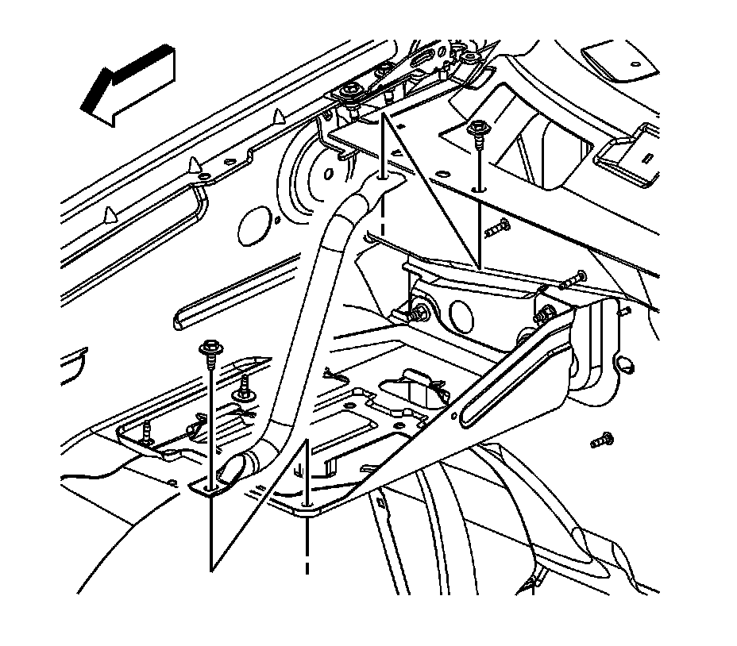
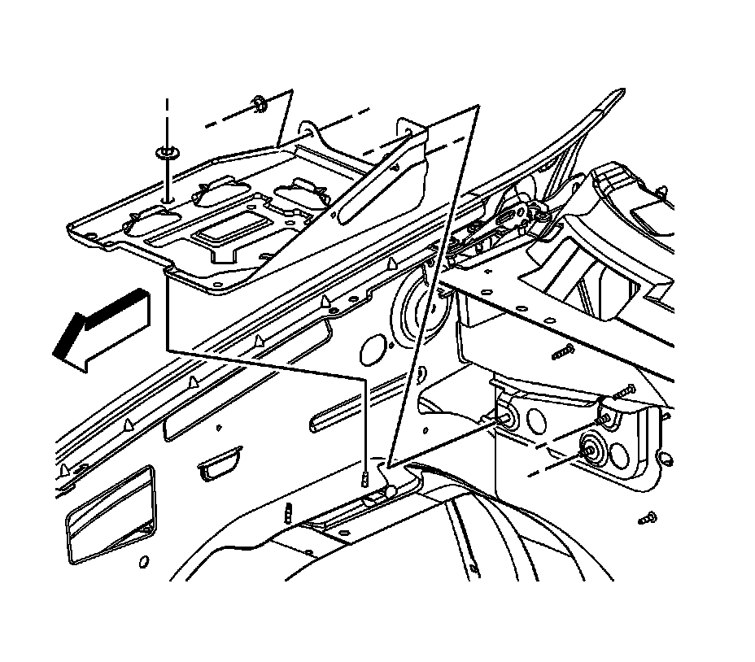

Battery Tray Replacement
BATTERY TRAY REPLACEMENT
REMOVAL PROCEDURE

1. Remove the battery.
2. Remove the battery tray front support bolts.
3. Remove the battery tray front support.

4. Remove the nut securing the battery tray to the front fender inner panel.
5. Remove the 3 nuts securing the battery tray to the battery tray bracket.
6. Remove the battery tray from the vehicle.
INSTALLATION PROCEDURE
1. Install the battery tray to the vehicle.
2. NOTE: Refer to Fastener Notice.
Install the 3 nuts securing the battery tray to the battery tray bracket.
Tighten the nuts to 20 N.m (15 lb ft).
3. Install the nut securing the battery tray to the front fender inner panel.
Tighten the nut to 9 N.m (80 lb in).
4. Install the battery tray front support.
5. Install the battery tray front support bolts.
Tighten the bolts to 20 N.m (15 lb ft).
6. Install the battery.